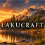

Pelaa reilusti
Älä käytä palvelimella epäreiluja etuja.

LAKUCRAFTLAKUCRAFTIN PELISÄÄNNÖT
Säännöt koskevat kaikkia pelaajia. Jos huomaat ongelman, ota yhteyttä ylläpitoon Discordissa.
Älä käytä palvelimella epäreiluja etuja.
Voicechatissa ei saa soittaa musiikkia eikä käyttää voice changeria.
Älä hyväksikäytä bugeja. Ilmoita löytämistäsi bugeista aina ylläpidolle.
Palvelimen tahallinen lagittaminen ei ole sallittua.
Muiden pelaajien kiusaamisesta chatissa tai voicechatissa voidaan rangaista.
Epäasialliset skinit eivät ole sallittuja.
Rangaistusta, kuten porttikieltoa, ei saa kiertää toisella käyttäjällä.
Rasistisia sanoja ei saa käyttää Minecraft-chatissa eikä voicechatissa.
Muiden palvelimien mainostaminen ei ole sallittua.
Toimi reilusti ja ota muut pelaajat huomioon.
Toisia pelaajia ei saa huijata tai johtaa harhaan. Tämä on sallittua Prison- ja SMP-pelimuodoissa.
Discordissa on noudatettava Discordin omia sääntöjä.
Mainostaminen ei ole sallittua Discordissa.
Spämmäys ja rasistiset sanat eivät ole sallittuja tekstichatissa eivätkä voicechatissa.
Huijaaminen eli scämmi ei ole sallittua Discordissa.
Ole asiallinen ja huomioi muut yhteisön jäsenet.
Sääntörikkomuksiin puututaan ylläpidon toimesta.
Avaa sääntökanava Discordissa